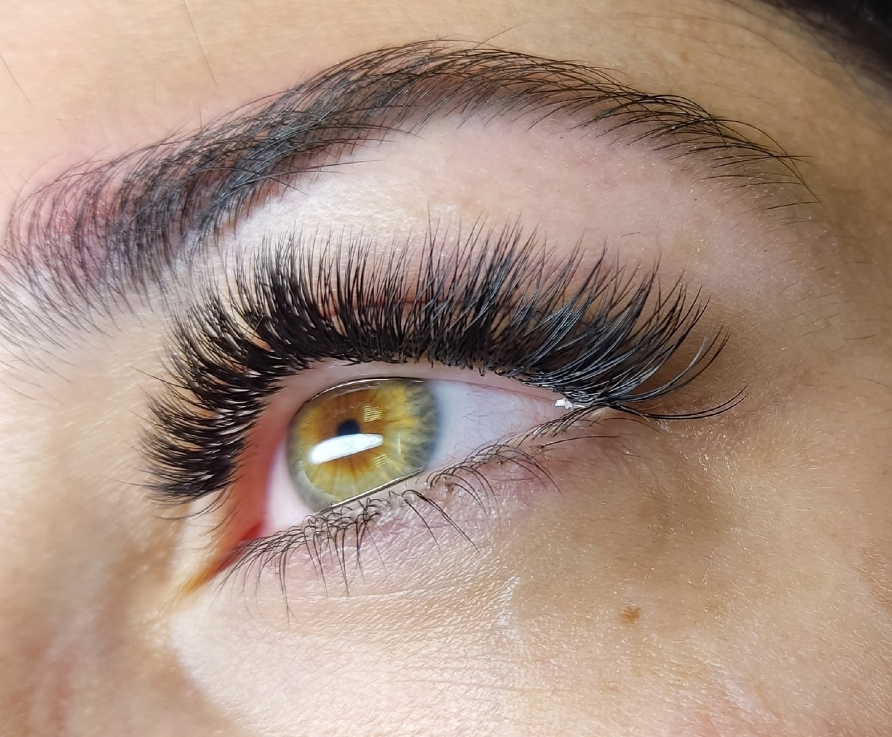
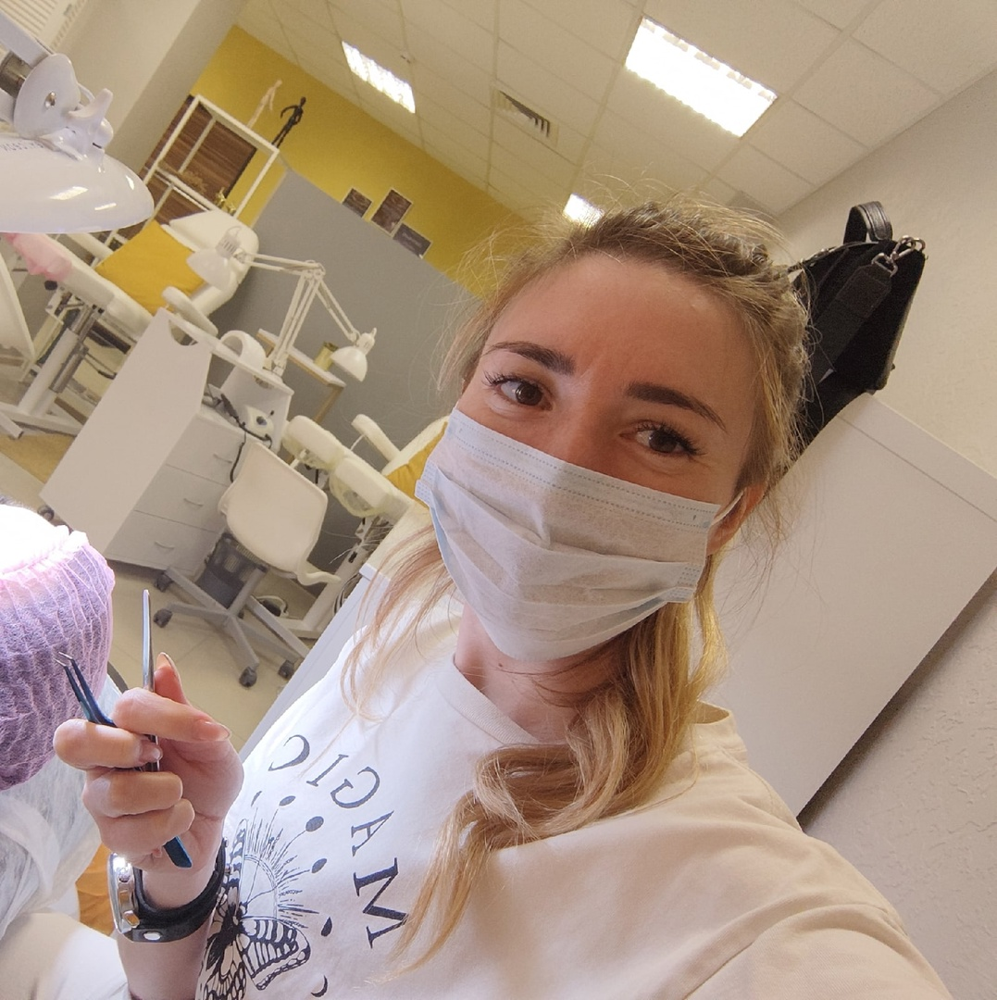
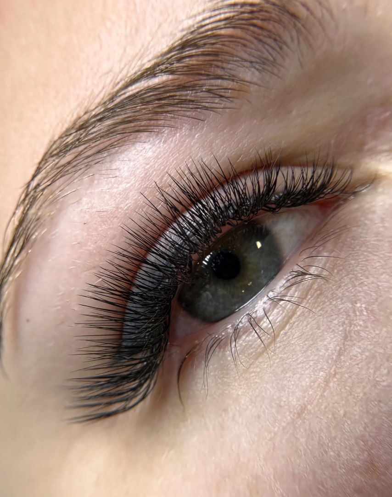

До курса доход был меньше 50 тысяч в месяц, брала всех клиентов подряд, не думая о своих планах. Теперь доход вырос больше чем в 4 раза, сосредоточена на развитии своего бизнеса. Жизнь стала легче и свободнее — может позволить себе больше для детей и отдыха.
Свою историю нам рассказала Римма Михайлова - мастер по наращиванию ресниц из Воронежа.
Мы взяли у нее короткое интервью:
— Расскажи, что было до курса, какой средний доход был в месяц? Сколько клиентов?
— Я точно не помню, но меньше 50 тысяч. В неделю было человек 7, значит, в месяц около 30. Брала всех подряд и когда было удобно клиентам, а на свои планы плевала.
— Ого, грустная картина. А какое сейчас положение дел?
— Сейчас получше. Доход вырос больше, чем в 4 раза. Новых клиентов почти не беру. Раскручиваю своих мастеров, ищу им клиентов.
— Круто как) А тяжело было учиться? Были сложности с применением?
— Да нет, все доступно и понятно . Курс просто огонь!
— Напомни, ты с куратором проходила уроки?

— Да, я изучала с куратором. Но я слишком долго это проходила, что срок с куратором прошел, потом я самостоятельно занималась.
— Всё равно молодец и умница) С куратором повеселее? Другим ребятам посоветуешь выбрать вариант с такой поддержкой?
— С куратором, конечно, поувереннее себя чувствуешь, потому что знаешь, что ты не один. Если вдруг что-то не получается, то можешь обратиться за помощью. С ним как-то спокойнее)
— Расскажи, как твоя жизнь изменилась? Что себе стала позволять? Куда-то путешествовала? Что-то купила?
— Однозначно стала чувствовать себя свободнее в финансовом плане. Детям стала покупать вещи, которые нравятся, а не которые подешевле. В прошлом году 2 раза съездили на море, хотя это не супер достижение.

— Все, остался только вопрос, сколько сейчас зарабатываешь? Сколько в среднем в месяц? Сколько клиентов? А вот примерно сколько за год было прошедший заработано?
— Вот в декабре получилось 300 тысяч чистыми. Но это был предновогодний адский ажиотаж. А в обычные месяцы около 200 в месяц.
Клиентов 130-160 человек в месяц
За год получилось почти 2 миллиона. Жесть! Куда я их дела?!?!?! Вспоминаю) И отдыхать ездили, и в салон вкладывала - оборудовала 2 рабочие зоны для ресниц и 1 для ногтей.

— ЗдОрово, значит в этом году будет еще круче) Больше мастеров - больше клиентов, больше доходов!
— Да, на это и расчет! А вам спасибо за знания)